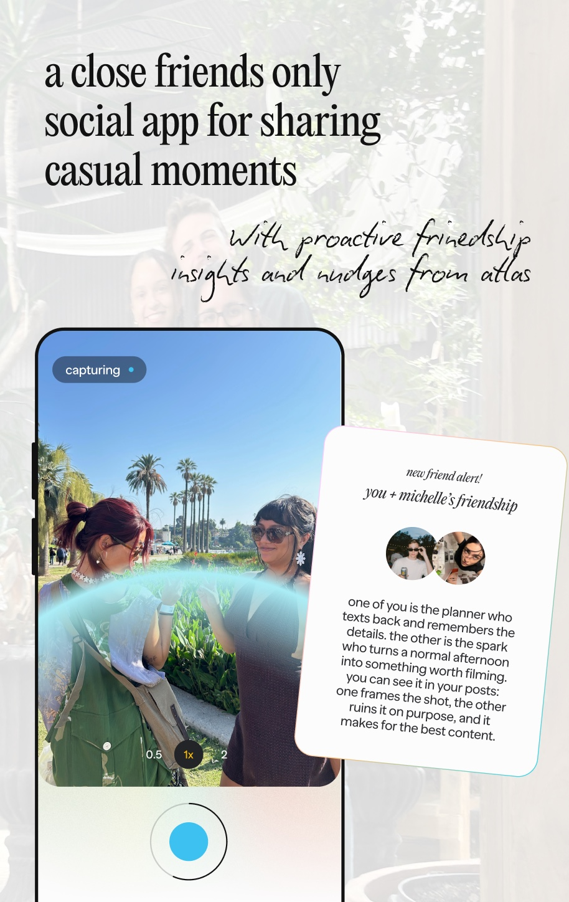
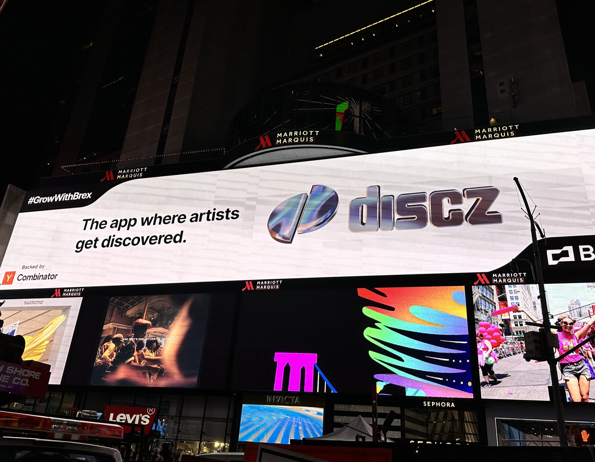

Housewarming: introduced a new ai paradigm around friendship intelligence, proactive insights and agent to agent planning
#22 Social Networking · SOCIAL AI
Consumer AI founder
I'm the founder & CEO of Discz Music Inc., a venture-backed consumer AI company behind multiple viral apps. I’ve built four products from zero to millions of users: Discz hit #1 in Music in ten countries, Verse hit #2 in Design, Housewarming hit #22 in social networking and Internet Bedroom reached over 20 million people. Previously, I was a senior engineer at Meta, working on the company's latest experimental initiatives. On the side, I'm a wine enthusiast but also a cold plunge and wellness junkie.

Housewarming: introduced a new ai paradigm around friendship intelligence, proactive insights and agent to agent planning
#22 Social Networking · SOCIAL AI
Internet Bedroom: megaviral web campaign turning your music into a digital space that reflects your taste
20M+ people reached · VIRAL INTERNET CULTURE
Verse: AI creative expression app for multimedia freeform creation
#2 in Design

Discz: AI music discovery and social app that Rolling Stone called the industry’s ‘hottest recommendation tool.’
#1 in Music, 10+ countries · YC W22
In the news